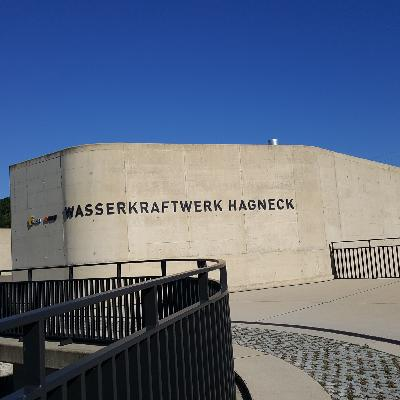
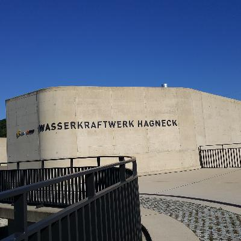
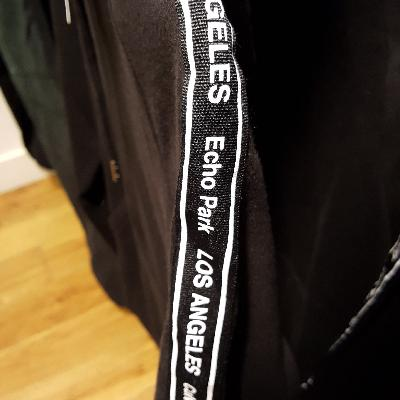
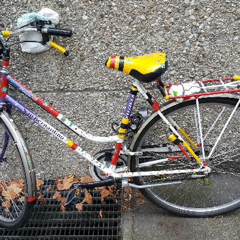
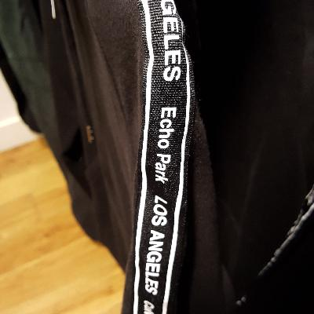
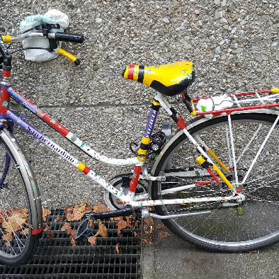

Continuing up through Switzerland, to the idyllic mountain town of Holderbank.
Up to Bienne
The trip from Yvonand to Bienne was pretty, and mostly flat. I did manage to go around a 5 km circle at one point, when I missed a sign… D'oh!
 


Biel/Bienne
Biel (German) or Bienne (French) is a bilingual city, which meant I never knew whether to lead with English or French. It's medium-sized. I stayed in a private room in a hostel, to change things up. A Swiss hostel isn't all young people, but it is a lot of groups. For me, it was a somewhat inexpensive hotel that was a little noisy until 11. Anyway, here are some pictures of Bienne…

Shopping
I did a little bit of shopping in Bienne. It's getting cold (highs around 15, which I guess is the low 60's), so I needed a sweatshirt. Now, there are two ways to go when you need a cheap sweatshirt in Europe: nondescript, or a sweatshirt with nonsensical “English” on it. Guess which way I went.
 



Bienne to Holderbank
Today is the “big climb,” but it's not all that big, really. Maybe 250 meters in total.
Holderbank
Holderbank is an idyllic little town in a “nature park” (national forest?) in the Jura mountains. I'm here for two nights/one day. I also realized that on Sunday, France (and Germany) are only 45 km away, and mostly downhill, so I don't need to do my normal Saturday errand of buying lunch for Sunday before 1 PM or so, when the markets close. This is also the last place I'll stay in Switzerland – in Basel, I'll be sleeping in St. Louis, the French suburb, and then in Geneva, I'll be in Fernay-Voltaire, again in France. Food in Switzerland is about double what it is in France, and lodging is about 50% more, and with a bike, it's not a big deal to be a little bit removed. Actually, its nice to be out of the city center.
Anyway, that means that tomorrow I don't need to do anything, which is great: I can mostly just go for a long hike in the forest.
I'm staying in a pretty nice hotel, and it's not all that expensive, at around $100/night (breakfast included). By the standards of this trip, that's a bit of a splurge, but it's totally worth it. I'm splurging a bit on dinner, too… It's not all that much money, but at $60 or $70 for dinner (with soup, main course, a beer, desert and coffee), I just spent over 30x what lunch cost in Burkina Faso. And that's a super fancy $2/1200 CFA lunch; often lunch in Léo was more like $0.50! I'll admit that Switzerland is a bit of a price shock. One franc to the dollar will do that; it was more like 1.5 francs to the dollar when I was coming to Geneva a lot, in the late 90's.
Anyway, this place is incredibly beautiful, and I think wandering around the mountains and the forest will be a lovely way to spend a Saturday.